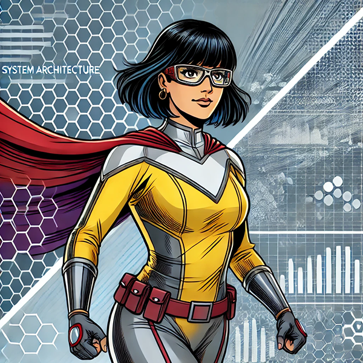

Architecta
Solutions Architect - Ability to Design Complex Systems, Structured Data Stores & APIs
Bio
Architecta is the visionary systems architect who combines technical brilliance with creativity.
She is a master of designing robust, scalable, and resilient systems, ensuring that every component works
efficiently and harmoniously. Her ability to see system designs and architect optimal solutions makes her a
powerful force in systems architecture, but her tendency to over-engineer can sometimes lead to overly complex designs.
- Architecture Visualization:
Architecta has the unique ability to envision an underlying structure of any system—whether it’s a physical or digital network, and instantly apply the most effective design patterns to solve complex problems. - Design Pattern Mastery:
She has an encyclopedic knowledge of design patterns and can apply the most effective ones to solve complex problems on the fly. - Structured Data Design & APIs:
Sometimes called Schema, she is also the guardian of order and organization within data systems. She has the power to enforce clear, well-defined structures on data, ensuring that it is consistently formatted, easily searchable, and efficiently managed. She can impose rules, relationships, and hierarchies on data, making it straightforward to store, query, and analyze. Her influence ensures that data is predictable and reliable, enabling seamless integration across systems via APIs. -
Rapid Prototyping & Tracer Bullets for Real Time Validation:
Architecta is capable of materializing her designs into working prototypes almost instantly, allowing her to test and refine solutions in real-time.: She deploys tracer bullets to focus on solving the most complex, high-risk portions of the system design to determine whether the design is feasible. These tracer bullets are working slices of the system that focus on proving the most complex and/or high risk aspects of the design. By tackling the toughest part first, she can validate that the design is solid before committing resources to full-scale development.
- Over-Engineering: Architecta’s drive to create the most efficient and resilient systems can sometimes lead her to over-engineer solutions by over-relying on patterns. While her designs are always effective, they can sometimes become more complex than necessary, making them difficult for others to maintain or understand.
- Reliance on Structure: Architecta excels in structured environments, but she struggles when faced with completely unstructured systems or chaotic, unpredictable scenarios. Her preference for well-organized systems can be a limitation, challenging her to accommodate diverse or rapidly changing information.